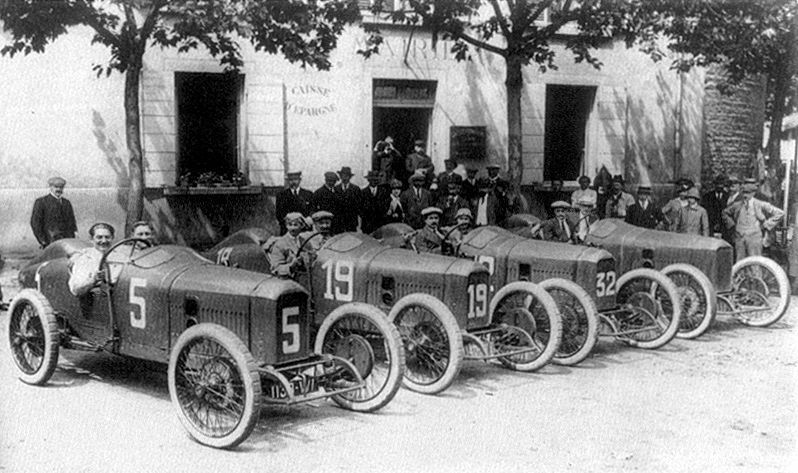
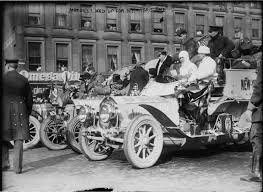
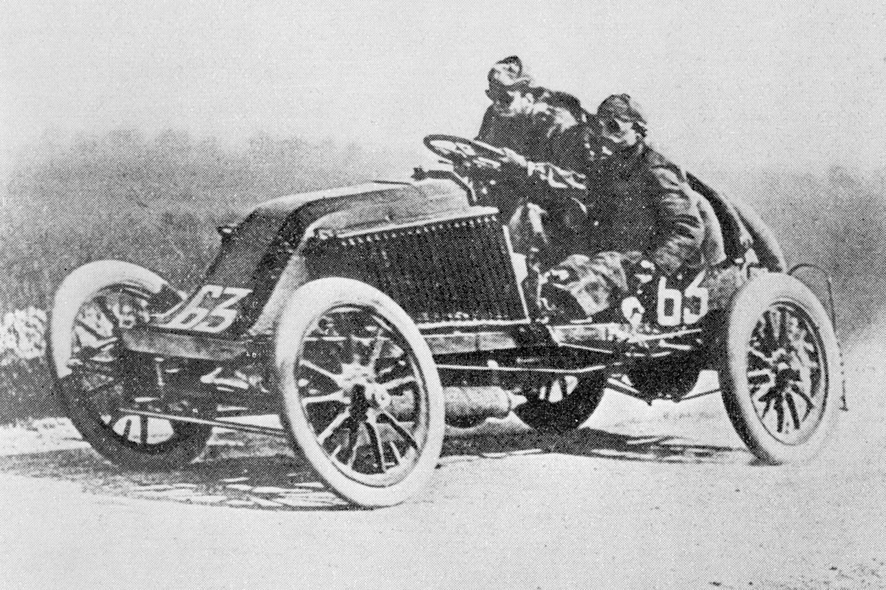
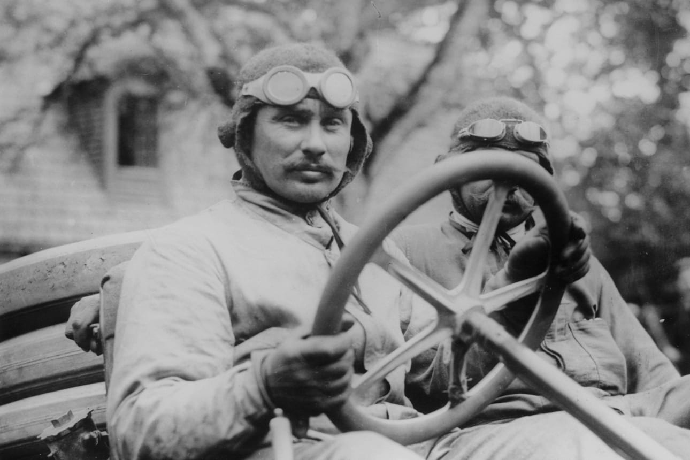
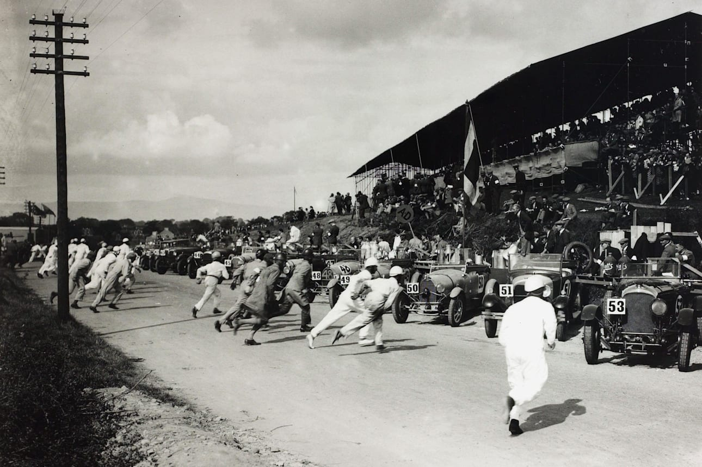
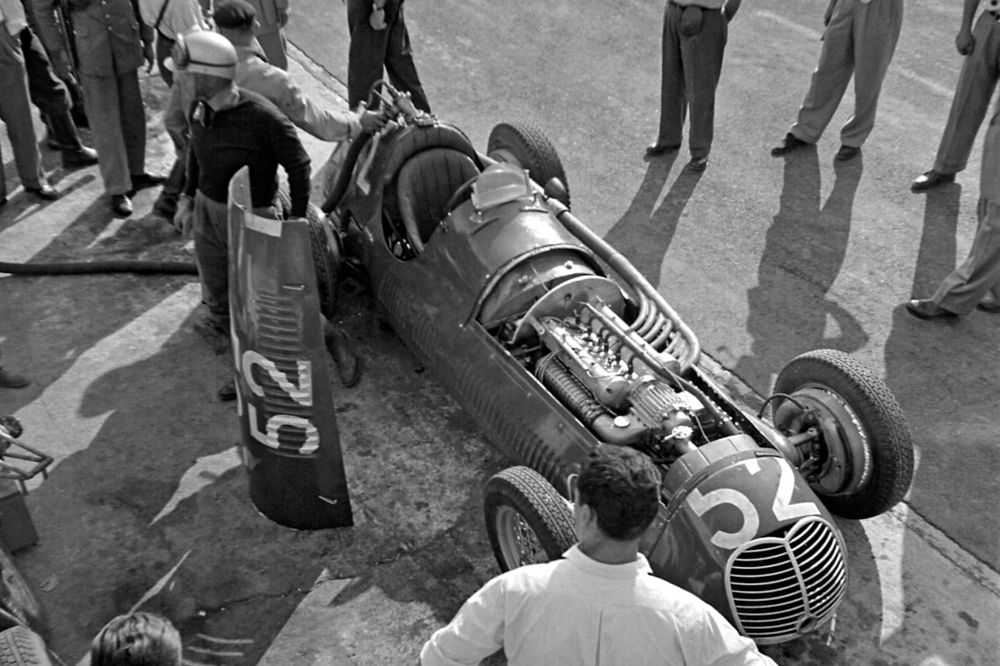
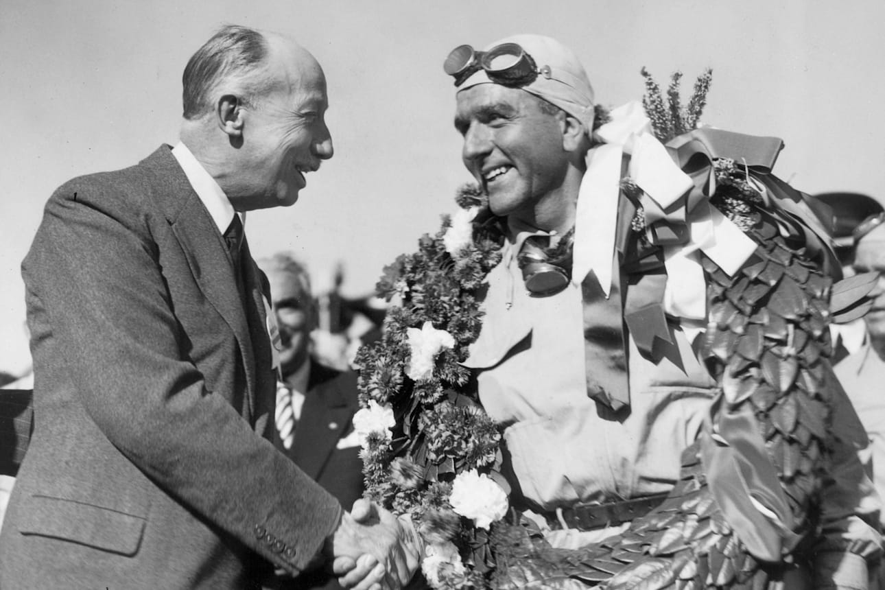

История автогонок
История автоспорта неразрывно связана с общей историей автомобилестроения. Как только в мире появились автомобили разных производителей, так сразу у людей возникло желание сравнить их технические характеристики и ездовые качества в бескомпромиссной борьбе.
На заре автомобильной эры человечество еще не обладало такими мощными медийными ресурсами, которые есть сегодня. Поэтому участие лимузинов в редких на то время спортивных состязаниях приносило их производителям и вполне практическую пользу. Автогонки были как раз тем информационным поводом, мимо которого старались не проходить уважающие себя издания. Таким образом, участвующие в состязаниях автомобили получали абсолютно бесплатную рекламу среди широкого круга потенциальных покупателей.
С течением времени количество проводимых в мире автогонок неизменно росло. Появлялись и новые разновидности состязаний. К стандартным заездам серийных автомобилей по дорогам общего пользования добавились скоростные соревнования специальных спорткаров на кольцевых трассах и многодневные изнурительные «скитания» по бездорожью. Автоспорт завоевал всеобщую любовь и признание потребителей. Именно по этой причине ведущие автопроизводители считают своим долгом иметь в организационной структуре собственные спортивные «конюшни».
Самая первая автомобильная гонка состоялась во Франции более 120 лет назад – в июле 1894. Она носила название «Проверка надежности» и проходила по маршруту Париж - Руан. Принять участие в этой «проверке» планировали 102 экипажа, но реально стартовал только 21 автомобиль. До финиша добралось 15 моделей, среди которых было 13 бензиновых авто и 2 паровых. Победителями стали сразу два автомобиля: Пежо и Панар-Левассор. За прошедшие с первой автогонки 120 лет в автомобильном спорте сложилась своеобразная иерархия состязаний. На сегодняшний день можно выделить четыре самых престижных гонки, стать победителем в которых мечтает любой начинающий спортсмен. Эти гонки проводятся каждый год на протяжении многих лет, собирая тысячи поклонников и фанатов. Люди приезжают со всего мира для того, чтобы поболеть за своих кумиров, поддержать отечественные команды и насладиться неподражаемой атмосферой настоящего спортивного праздника.
Первые гонки в истории
В 1900 году произошло событие, которое сыграло решающую роль в мире автогонок. Джеймс Гордон Беннет-младший, владелец газет New York Herald и Herald Tribune, учредил в Европе автомобильные соревнования на кубок своего имени Gordon Bennett Cup. По правилам соревнований каждая страна могла выставить до трех автомобилей. Гонка на Кубок Гордона Беннета стала ежегодной и привлекла спортсменов со всего мира.
Следуя примеру Гордона Беннета, американский миллионер Уильям Киссам Вандербильт II начал проводить гонки на Кубок Вандербильта Vanderbilt Cup в США. Первая такая гонка прошла в 1904 году на Лонг-Айленде, штат Нью-Йорк.
Эти соревнования так увлекли швейцарца Луи Шевроле, что он решил оставить работу во французской строительной фирме и переехать в Штаты. С 1901 года он стал самым известным участником американских автогонок и сконструировал ряд автомобилей компании General Motors, впоследствии названных его именем.
Первый Гран-при
В 1906 году автомобильным клубом Франции (CAF) была организована гонка, получившая название Гран-при. Она проходила в июне на 105-километровой трассе города Ле-Ман. 32 участника соревнования представляли 12 различных автопроизводителей. Победил здесь венгерский автогонщик Ференц Сис, чей «Рено» преодолел расстояние 1 260 км.
Вскоре подобные соревнования стали проходить почти в каждой стране. Они не имели статуса официального чемпионата и везде проходили по разным правилам. Общим было то, что всех гонщиков сопровождал механик. Ремонтировать или настраивать автомобиль разрешалось только таким механикам и самим водителям. Интересно, что ключевым фактором успеха команды Renault в подобных гонках стало использование съемных колес, разработанных компанией Michelin. Их можно было менять, не разбирая автомобиль.
Первые гоночные трассы
Большинство первых автогонок проводились на участках обыкновенных дорог, закрывавшихся на время проведения соревнований. В 1906 году, когда проходил первый Гран-при Ле-Мана, специально построенных гоночных трасс ещё не существовало. Гонка «Тарга Фиорио» проходила в Сицилии на участке дороги длиной 150 км. В Германии для гонок «Кайзерпрайс» был выбран участок трассы длиной 120 км, а французский Гран-при 1907 года охватывал 77 км дорог в окрестностях Дьепа.
Первый специализированный трек «Бруклендс» был сооружен в 1907 году в Вейбридже, Великобритания. Американский автодром «Индианаполис Мотор Спидвей» впервые использовали по назначению в 1909 году, а в 1922-м открылся автодром «Монца» в Италии.
Название Гран-при быстро распространилось по другим странам Европы. Так, в 1924 году Гран-при прошли в Бельгии и Испании. Тем не менее, эти гонки не были официальными чемпионатами с едиными правилами. Над ними начали работать только незадолго до Первой мировой войны. Правила прежде всего определяли размеры и вес двигателей.
В 1924 году в качестве негласного органа, регулирующего проведение гонок Гран-при, была создана Международная ассоциация признанных автомобильных клубов (AIACR). Уже в 1928 году ее правила были отменены, и началась эра так называемой «свободной Формулы», когда соревнования проводились практически без ограничений. С 1927 по 1934 год количество гонок, заявленных как Гран-при, постоянно росло. В 1927 году таких соревнований было 5, в 1929-м – 9, а в 1934 году – уже 18.
Создание Формулы-1
Сразу после Второй мировой войны в категории Гран-при проходили всего четыре гонки. Правила для Чемпионата мира уже были созданы, но потребовалось еще несколько лет, прежде чем в 1947 году прежняя Ассоциация AIACR была реорганизована и переименована в Международную автомобильную федерацию (FIA).
В конце 1949 года в Париже было объявлено, что в 1950 году гонки будут объединены в Чемпионат мира среди гонщиков Гран-при Формула-1. Была разработана система подсчёта очков, семь гонок были признаны соответствующими требованиям чемпионата. Первый этап Чемпионата мира прошел 13 мая на трассе Сильверстоун в Великобритании. Началась новая эпоха автоспорта.